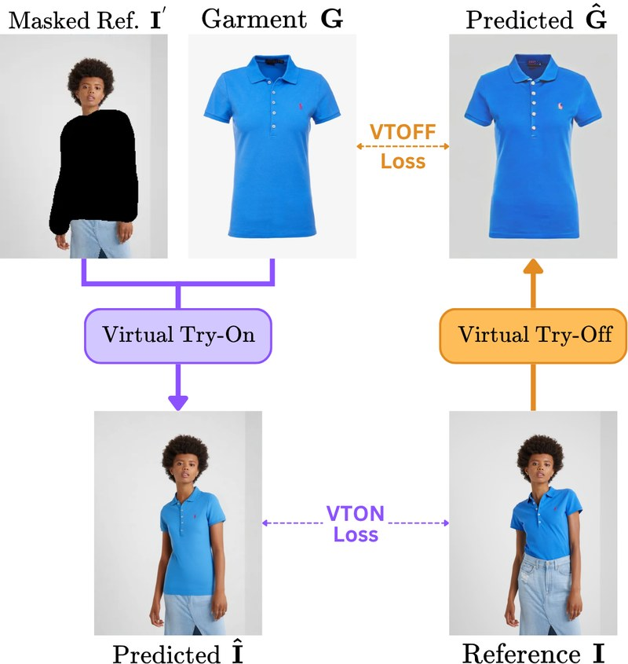

Illustration of the relationship between VTON and VTOFF.
Left: VTON focuses on transferring garments onto a person.
Right: VTOFF aims to reconstruct the garment itself from a worn instance.
These two tasks form a cyclical relationship: the output of one can serve as the input to the other.
This synergy provides: (1) improved training through consistency-based loss functions, and
(2) the ability to generate synthetic data for both tasks.
Such interplay enhances robustness and enables innovative methods in fashion image generation.
While VTON has garnered significant attention, VTOFF remains underexplored in research. Additionally, most
VTON methods rely on clean product images, which require costly photography and editing. By removing this
dependency, VTOFF can help smaller vendors create high-quality visuals more cost-effectively.

Multi-Garment TryOffDiff Overview. Given a reference image $I$ of size $(1024\times768\times3)$, the Image Encoder
(SigLIP-B/16) extracts features, producing a $(1024\times768)$ feature map. These features are processed by the
Adapter, following IP-Adapter, to align with the cross-attention mechanism, resulting in features of
shape $(77\times768)$. These adapted features replace the default text features in the cross-attention layers of
the Diffusion Model, which is a modified version of the Denoising U-Net from Stable Diffusion-v1.4.
A class label $c \in \{\text{"upper-body"},\ \text{"lower-body"},\ \text{"dresses"}\}$ is mapped to a learnable
embedding and integrated into the diffusion model's timestep embeddings, conditioning the generation on garment
type. The resulting latent output is decoded into pixel space by VAE Decoder of SD-v1.4, producing
the reconstructed garment image $\hat{G}$.
We train four distinct models: one for each garment category (upper-body, lower-body, dresses) and a multi-garment model that supports all classes.
All models are trained end-to-end using Mean Squared Error (MSE) loss, adhering to standard diffusion model training protocols.
Predictions of TryOffDiff on samples from the VITON-HD-test set.
@inproceedings{velioglu2025tryoffdiff,
title = {TryOffDiff: Virtual-Try-Off via High-Fidelity Garment Reconstruction using Diffusion Models},
author = {Velioglu, Riza and Bevandic, Petra and Chan, Robin and Hammer, Barbara},
booktitle = {BMVC},
year = {2025},
note = {\url{https://doi.org/nt3n}}
}
@inproceedings{velioglu2025mgt,
title = {MGT: Extending Virtual Try-Off to Multi-Garment Scenarios},
author = {Velioglu, Riza and Bevandic, Petra and Chan, Robin and Hammer, Barbara},
booktitle = {ICCVW},
year = {2025},
note = {\url{https://doi.org/pn67}}
}